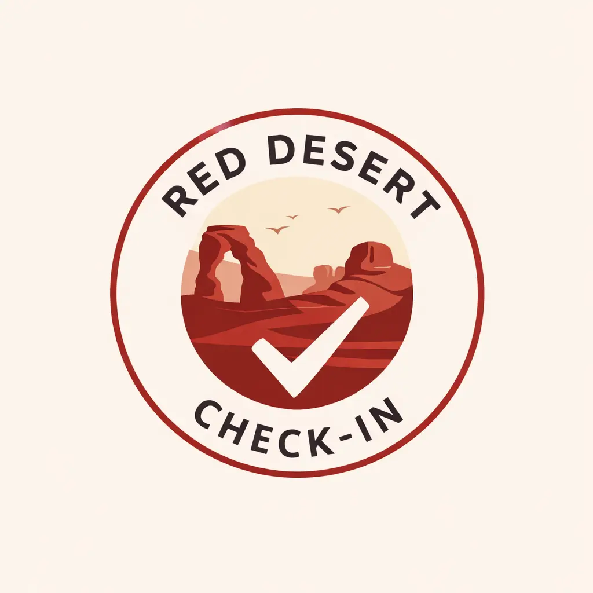
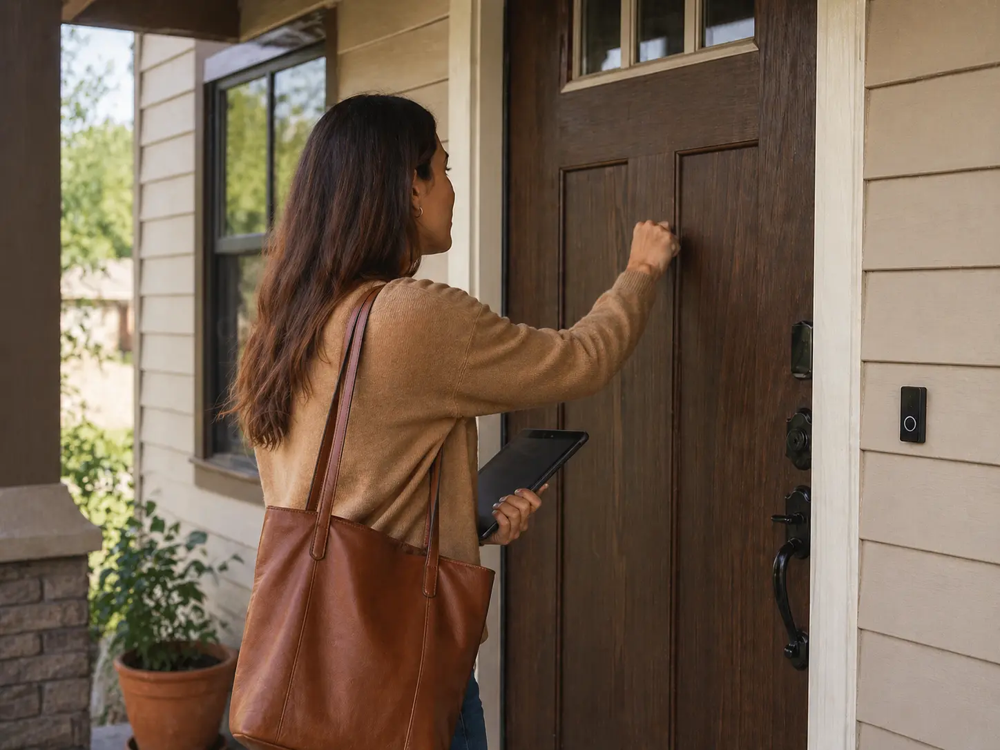
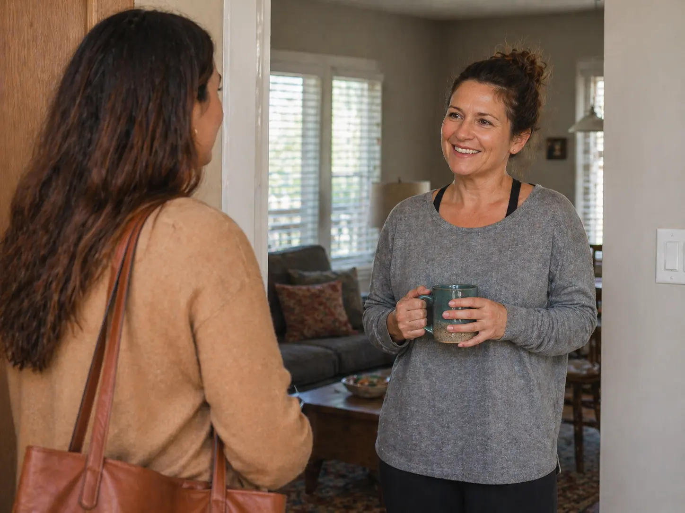
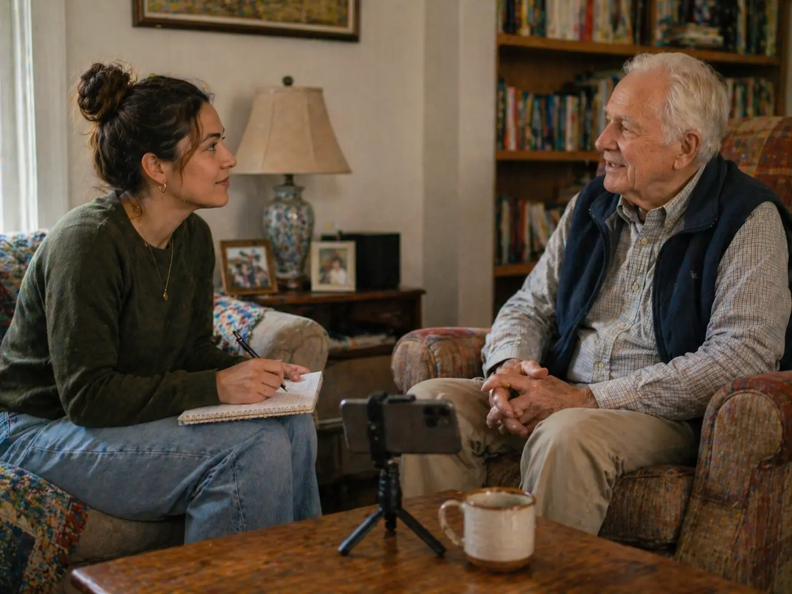

We talk first
We talk through the situation, what you are worried about, and what kind of update would actually help.

Book ConsultSt. George • Washington • Southern Utah
Red Desert Check-In provides local, in-person check-ins for the people, pets, homes, and places that matter to you. I show up, put eyes on the situation, and send you a clear update after.

The real problem
Sometimes it is not an emergency. It is not full-time care. It is not a big dramatic situation. You just need someone you trust to show up, notice what is going on, and tell you clearly.
How it works
We talk through the situation, what you are worried about, and what kind of update would actually help.
I visit locally, check what needs to be checked, spend time where needed, and notice what matters.
You receive a text or email update after so you are not guessing, spiraling, or trying to read between the lines.
Check-in types
This is one check-in service that can be used in different situations. The category just helps us understand what kind of concern you have.
For aging loved ones who are still independent, but need local eyes.
Use this when:

For someone you care about when you cannot get there yourself.
Use this when:
For the days after surgery, illness, injury, or a rough stretch.
Use this when:
For homes, rentals, offices, or small spaces that need a walkthrough.
Use this when:
For quick eyes on pets when you are away or need backup.
Use this when:
For the odd situations that do not fit neatly into a box.
Use this when:
Pricing
No confusing packages. Start with what you need.
$65
For a single check-in, occasional need, or one-time situation.
Best for ongoing support
$45/visit
For clients booking more than one check-in.
Consultation first: We talk through the situation before scheduling.
Flexible schedule: Weekly, monthly, temporary, or custom.
Need something different? Custom plans can be discussed.
Second offer
Sometimes the thing that needs to be preserved is not the house, the fridge, or the schedule. Sometimes it is the story.
Life Chapters is a guided storytelling service where I record conversations, transcribe them, and turn them into a digital keepsake for the person or family.
Learn About Life Chapters
About Red Desert Check-In
I’m Jenell. I work in medical alarm dispatch, and I have spent years talking with seniors, families, caregivers, and people in stressful situations.
I know the difference between panic and concern. I also know how often families need someone calm, local, and practical to help them get a clearer picture.
Red Desert Check-In exists for the moments when you need human eyes, honest updates, and someone willing to show up.
Start with a quick consult or reach out directly. No pressure, no weird sales pitch.